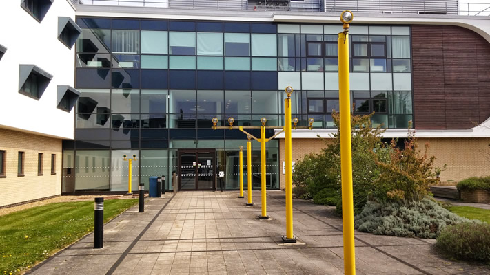

The title of this lighting installation refers to the sci-fi film 'The day the Earth stood still'. The artwork uses sound and light to animate the approach to the Robert Hooke building using a series of aircraft runway landing lights. Simon Patterson was born in the UK in 1967, and nominated for the Turner Prize in 1996.